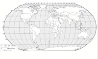

Образование нашей планеты: "холодная" и "горячая" гипотезы
Земля — третья от Солнца планета Солнечной
системы, крупнейшая по диаметру, массе и плотности среди землеподобных планет.
Чаще всего упоминается как Земля, планета Земля, мир. Единственное известное на данный
момент тело Солнечной системы в частности и Вселенной вообще, населённое живыми существами.
EarthНаучные данные указывают на то, что Земля образовалась из

Солнечной туманности около 4,54 миллиардов лет назад, и вскоре после этого приобрела свой
единственный естественный спутник — Луну. Жизнь появилась на Земле около 3,5 миллиарда лет назад.
С тех пор биосфера Земли значительно изменила атмосферу и прочие абиотические факторы, обусловив количественный
рост аэробных организмов, так же как и формирование озонового слоя, который вместе с магнитным полем Земли ослабляет
вредную солнечную радиацию, тем самым сохраняя условия для жизни на Земле. Кора Земли разделена на несколько сегментов,
или тектонических плит, которые постепенно мигрируют по поверхности за периоды во много миллионов лет. Приблизительно 71 %
поверхности планеты покрыт морской водой, остальную часть поверхности занимают континенты и острова.
Жи- дкая вода, необходимая для всех известных жизненных форм, не существует на поверхности какой-либо из
известных планет и планетоидов Солнечной системы. Внутренние области Земли достаточно активны и состоят из толстого,
относительно твёрдого слоя называемого мантией, которая покрывает жидкое внешнее ядро (которое и является источником магнитного поля Земли)
и внутреннее твёрдое железное ядро.
Земля взаимодействует с другими объектами в космосе, включая Солнце и Луну.
Земля обращается вокруг Солнца и делает вокруг него полный оборот примерно за 365,26 дней.
Этот отрезок времени — Сидерический год, который равен 365,26 солнечным суткам.
Ось вращения Земли наклонена на 23,4° относительно её орбитальной плоскости,
это вызывает сезонные изменения на поверхности планеты с периодом в один Тропический год (365,24 солнечных суток).
Луна — начала своё обращение на орбите вокруг Земли примерно 4,53 миллиарда лет назад
, что стабилизировало осевой наклон планеты и является причиной приливов, которые замедляют вращение Земли.
Кометная бомбардировка во время ранней истории планеты сыграла свою роль в формировании океанов.
Более поздние воздействия астероидов приводили к существенным изменениям в окруж- ающей среде и поверхности Земли.
В частности, падения астероидов могут нести ответственность за несколько массовых вымираний различных видов живых существ.
copyright 2009